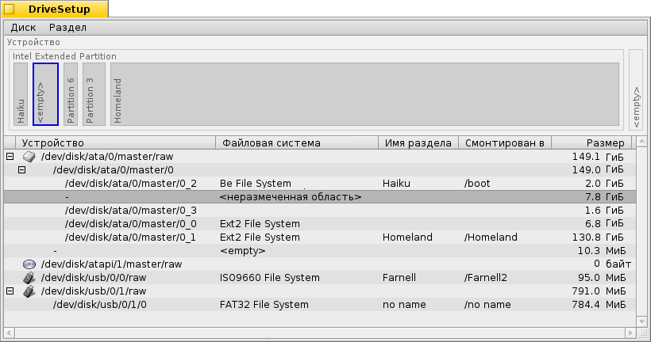
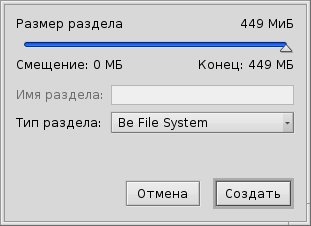
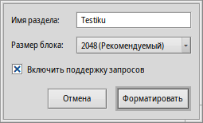

Русский
Русский Català
Català Deutsch
Deutsch English
English Español
Español Français
Français Italiano
Italiano Magyar
Magyar Polski
Polski Português
Português Português (Brazil)
Português (Brazil) Română
Română Slovenčina
Slovenčina Suomi
Suomi Svenska
Svenska 中文 ［中文］
中文 ［中文］ Українська
Українська 日本語
日本語 Разметка диска (DriveSetup)
Разметка диска (DriveSetup)
| Расположение в Deskbar: | ||
| Расположение в Tracker: | /boot/system/apps/DriveSetup | |
| Настройки хранятся по адресу: | ~/config/settings/DriveSetup |
Разметка диска (DriveSetup) - это утилита для создания, удаления и инициализации разделов. На данный момент она не может перемещать разделы или менять их размер, поэтому вам понадобится неразмеченный том (возможно, внешний USB-накопитель или другой жесткий диск), либо придется воспользоваться сторонней утилитой вроде GParted LiveCD для выделения свободного пространства для нового раздела.
Верхнюю часть окна занимает графическое представление всех разделов устройства, выбранного в списке, расположенном ниже. Помимо 4-х первичных разделов каждый из дисков может содержать несколько расширенных/логических разделов. Чтобы увидеть детальную информацию о каждом логическом разделе, вам понадобится развернуть список разделов, кликнув по элементу +/-, предшествующему наименованию диска.
Выбрав раздел из списка, вы можете смонтировать и размонтировать его с помощью команд в меню , или нажав ALT M or ALT U.
Кроме того, вы можете удалить раздел с помощью меню .
Однако следует помнить следующее:
 Создание нового раздела
Создание нового раздела
Выбрав меню (ALT C), вы можете создать новый раздел, используя <неразмеченную область> на диске, как показано выше.
В этом диалоге следует задать размер и тип файловой системы. Выберите , если вам необходим раздел для установки Haiku или же если вы хотите использовать все преимущества этой системы, такие как атрибуты и запросы. Обратите внимание на то, что другие операционные системы могут иметь трудности с доступом к такому разделу.
Если вы создали первичный раздел вместо очередного расширенного/логического раздела, то диалог, показанный выше, также отобразит опцию . Если вы собираетесь использовать этот раздел для загрузки Haiku, то вам необходимо его отметить.
Перед тем как вы сможете использовать или просто смонтировать вновь созданный раздел, он должен быть инициализирован (отформатирован) в файловую систему.
Инициализация раздела
Только размонтированные разделы могут быть инициализированы в меню .
Здесь вам нужно ввести имя раздела и размер его блока. Рекомендуемый размер - 2048 байт на блок, но если потребуется, вы можете выбрать больший или меньший размер.
Инициализация уничтожит все данные на этом разделе!